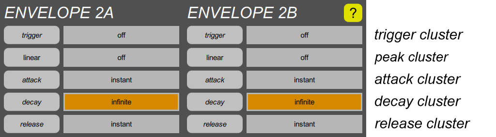

ENVELOPE sections

An “envelope” generator creates a time-varying signal that is usually triggered at the start of a note, and that returns to zero when the note is released. Volume is always controlled by at least one envelope, but they are useful for modulating other things as well.
The basic shape of an envelope in the Digital Chroma is called “ADR”, for Attack Decay Release. That is, each envelope goes through an attack phase, rising to a variable peak level that may depend upon key velocity, and then a decay phase in which it falls toward zero, and finally a release phase in which it falls toward zero at a faster rate when the key is released.
More complex shapes are created by using more than one envelope, which is why the Digital Chroma has four of them. For instance, if the decay for one is set short, and the other is set to infinity, they can be combined into the common “ADSR” (Attack Decay Sustain Release) shape. Or if the decay for one is set short, and the attack of another is set long, they can be combined into a “sforzando” shape which consists of an initial short burst which then gradually fades back in. Also, each envelope has an adjustable response to key velocity (or to pedal or lever position), so the user can decide how velocity should affect the two parts of a composite envelope independently.
Finally, ENVELOPE 2A and 2B also have Trigger parameters, which allows the onset to be delayed by any amount, or triggered by various things including either sweep generator, the release of the note, or when ENVELOPE 1A or 1B enters its Decay phase.
The ENVELOPE 1 section has:
- One peak cluster. The button shows the mod select parameter, which translates key velocity (or other controls) into peak level, and the slider shows the mod depth, which is how much the peak amplitude varies.
- One attack cluster. The slider controls the basic attack time, but secondary parameters allow this to be modulated.
- One decay cluster. The slider controls the basic decay time, but secondary parameters allow this to be modulated.
- One release cluster. The slider controls the basic release time, but a secondary parameter allows this to be modulated.
The ENVELOPE 2 section also has:
- One trigger cluster at the beginning. As mentioned, it allows the start of the envelope to be delayed, or triggered by a sweep or other things.
